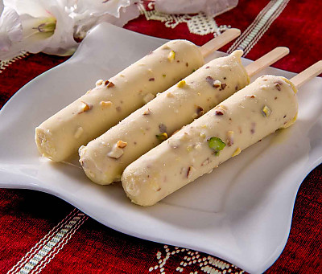

Kesar Pista Kulfi
Home

Description
Kesar Pista Kulfi is a luxurious, saffron-infused kulfi loaded with pistachios and a hint of cardamom. It has a deep golden color and a royal taste.
Ingredients
- Full Fat Milk
- Sugar
- Cardamom Powder
- Finely Chopped Pistachios
- Saffron Strands
- Cornflour or Condensed Milk
Steps
- Boil the milk
- Add sugar, cardamom and saffron
- Add chopped pistachios
- Cool the Mixture
- Pour into kulfi molds
- Unmold and Serve